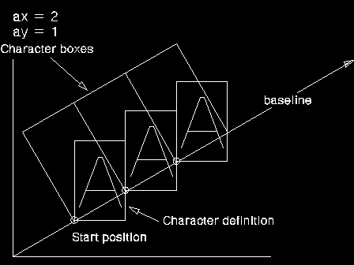

The coordinates of the point pgradlAngle specify integer values for the coordinates of the end of a line starting at the origin (0,0); the base line for subsequent character strings is parallel to this line.
The effect of the baseline angle attribute depends on the value of the character mode attribute (see GpiSetCharMode), and whether the current font is an outline or a raster font, as described below.
When the character mode is set to CM_MODE1, and the current font is a raster font, the character angle can be ignored.
When the character mode is set to CM_MODE2, and the current font is a raster font, the angle is used to determine the position of each character, but the orientations of characters within the character box may not be affected by changes in character angle. If this is so, the characters are positioned so that the lower left-hand corners of the character definitions are placed at the lower left-hand corners of the character boxes after all transforms have been applied. This is illustrated below.
For illustrative purposes, the figure shows all character reference points at their bottom left-hand corner.
When the character mode is set to CM_MODE3, or when the current font is an outline font, the angle is observed accurately, and the character boxes are rotated to be normal (perpendicular) to the character baseline. If the world coordinate system is such that one x-axis unit is not physically equal to one y-axis unit, a rotated character string appears to be sheared.
This function must not be issued in an area bracket.
The attribute mode determines whether the current value of the baseline angle attribute is preserved.